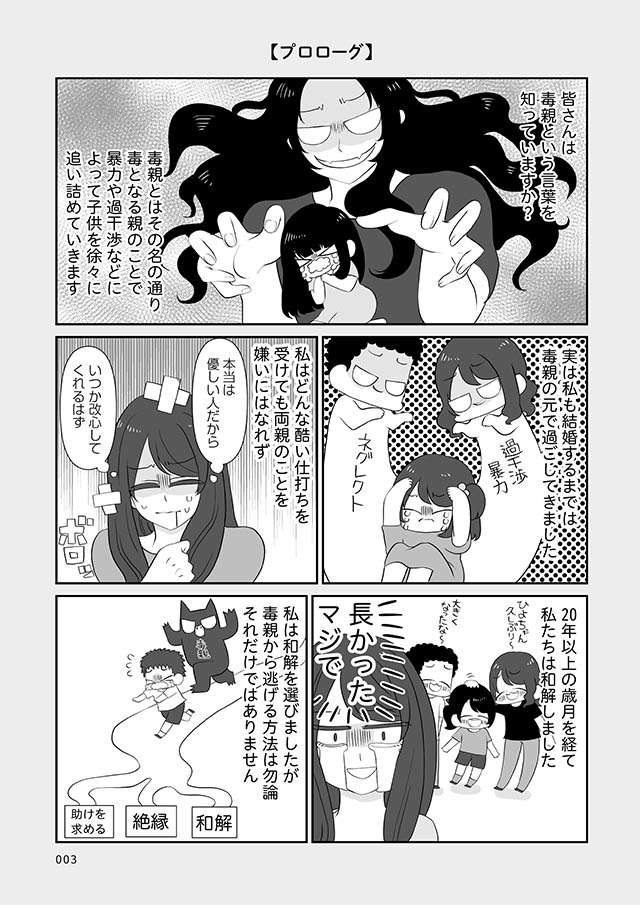

近年来，“有毒父母”这个词很常见。它通常指那些干涉孩子、通过辱骂性语言和暴力控制孩子或忽视孩子的父母，而《有毒的父母无法爱我，所以我变得爱上瘾》（角川）的作者椿鸟野也是由这样的有毒父母抚养长大的。童年时，她经常遭到母亲的殴打和谩骂，又因对父母的逆反而沉迷于爱情，学生时代，她需要的只是男人的爱……但24年后，她仍然有力量选择与母亲和解。我们为您带来有关 Uzura Torino 和她母亲的一集，让您重新思考家庭的本质。
*本文部分摘录自栃鸟野所著的《我对爱情上瘾是因为我没有被有毒的父母所爱》一书的部分摘录和编辑。
*本文包含敏感内容。请在阅读之前了解这一点。

 ▶漫画西摩
▶漫画西摩 ▶ebookjapan
▶ebookjapan ▶BookLive!
▶BookLive!